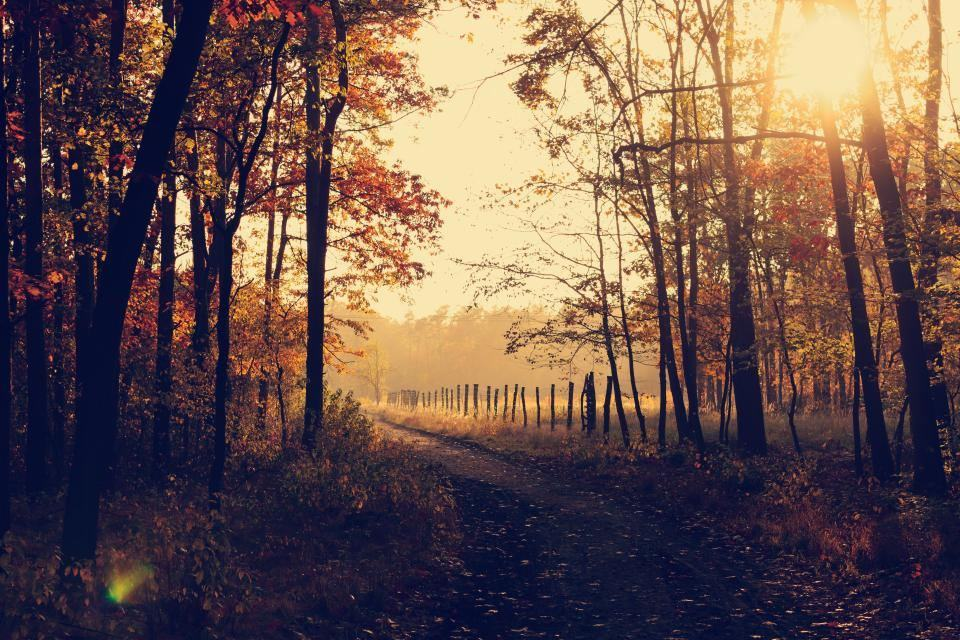
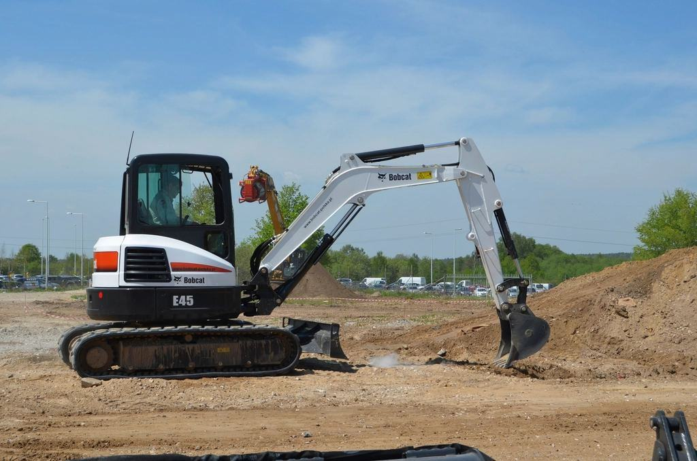
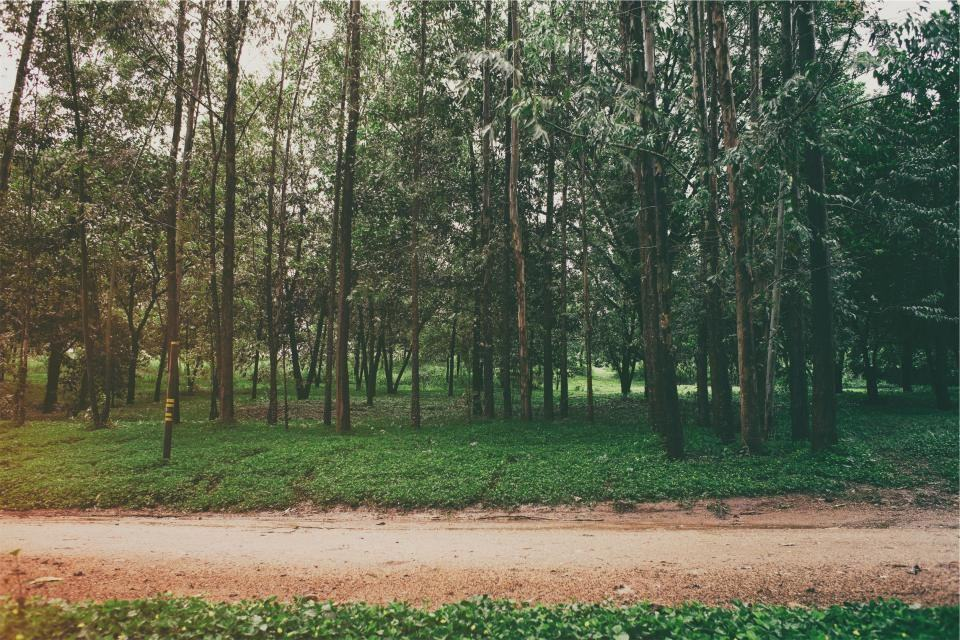
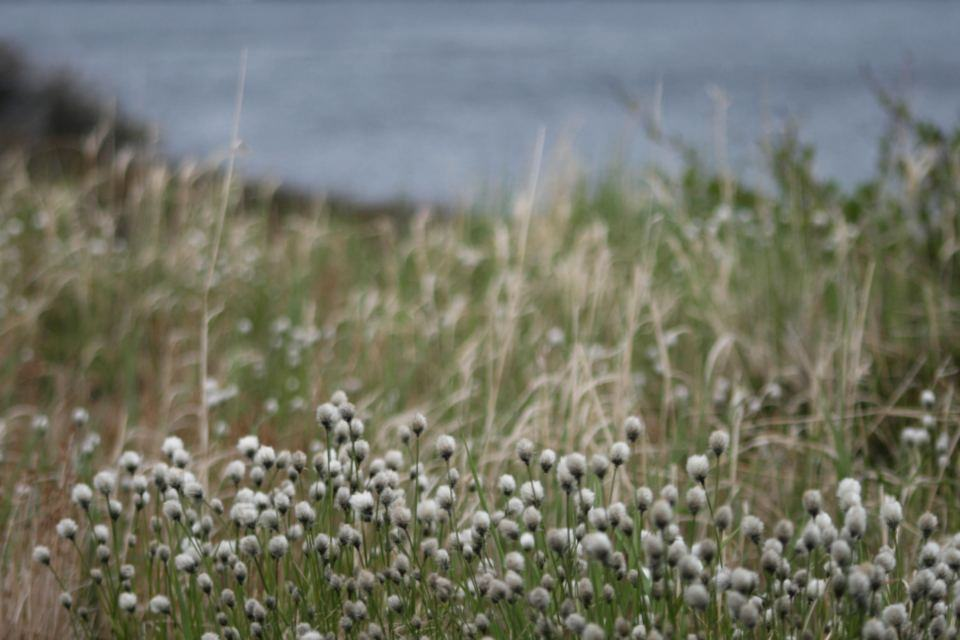

Referenser
Ett urval av uppdrag vi har utfört.
- 2025

Slutavverkning Lessebo
Skotare ute på fem timmar efter ett boggihaveri i juletid.
- 2025

Gallring Tingsryd
Gallringsskördare i tre veckor medan kundens maskin fick ny motor.
- 2026

Tjälperioden i Älmhult
Två skotare veckohyrda under sju veckor i februari och mars.
- 2025

Hygge vid Åsnen
42 hektar högläggning med GPS-kvitto till skogsägaren.
- 2024

Stormfällt i Ronneby
Upparbetning av stormfällen gran med vår förare under tolv dagar.
- 2026

Gallring Alvesta
Lätt skördare bokad för förstagallringar under hösten.
Entreprenörer som stod still
”Motorn lade av en tisdag eftermiddag. Klockan fem på onsdagsmorgonen stod en skördare med samma aggregat vid avlägget, och prisfilerna var redan inlagda.”
Maria K. · Älmhult”Vi hyr två skotare varje tjälperiod sedan 2020. Det är billigare än att äga en tredje maskin som står still i nio månader.”
Gösta H. · Urshult”Kartan med planteringspunkterna gjorde att jag kunde kontrollera hygget från köksbordet.”